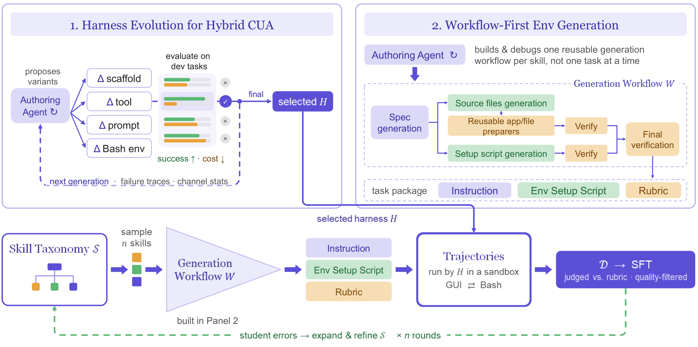

Mage-VL-Cowork
A Full Training Recipe to Learn Hybrid Computer Use from Evolved Harnesses
Project Page Technical Report GitHub Mage-VL-Cowork Mage-VL Mage Collection License: Apache 2.0

---
One compact 4B policy that knows when to click — and when to code.
Computer-use agents (CUAs) that confine themselves to pixels pay a heavy tax: a single screenshot consumes thousands of tokens, and re-deriving structured file edits through dozens of mouse clicks discards the fastest, most verifiable channel on the machine. Conversely, giving a frontier model naive access to both GUI and terminal tools does not automatically produce hybrid competence — without an optimized execution scaffold, even frontier teachers exhibit suboptimal channel habits that transfer directly to distilled students. Worse, existing CUA post-training pipelines rely on checkpoints already heavily specialized for GUI grounding and coding.
Mage-VL-Cowork bridges this gap. Trained end-to-end from an intermediate 4B Mage-VL checkpoint through a progressive five-stage specialize-then-unify curriculum, it combines screenshot-grounded GUI interaction (computer_use) and persistent code/terminal execution (bash) inside a single vision-language policy — with no external orchestrator. Upstream of training, we evolve the teacher harness (pruning redundant action routes and equipping domain libraries) and build Mage-CUA-Forge, a workflow-first synthesis engine that generates 293,806 tasks across 6,915 atomic skills while cutting recurring per-task generation cost by 82.6%.
At 4B parameters, Mage-VL-Cowork reaches 66.0% on OSWorld-Verified under a 50-step budget — achieving the best performance among 4B models and demonstrating that an efficient small VLM can excel at complex computer use, pushing the frontier of on-device intelligence. Across training stages, online reinforcement learning adds +10.16 percentage points over Hybrid SFT while simultaneously cutting mean model calls by 13.0% and output tokens by 25.4%.
✨ Highlights
- Best-in-class 4B hybrid computer use (66.0% OSWorld-Verified). Achieving the highest score at the 4B scale,
Mage-VL-Coworkproves that an efficient small VLM can master end-to-end computer use — leading on Operating System tasks at 87.5%, reaching 62.7% on Multi-Application Workflows, and advancing the frontier of on-device intelligence. - Internalized turn-level channel routing. Without an external multi-agent router, the policy dynamically selects
computer_usefor visual layouts, canvas editing, and live in-memory application state, and switches tobashfor structured programmatic edits (spreadsheets, documents, presentations) and deterministic ground-truth verification. - Evolved teacher harnesses amplify student distillation (+12.5 pp). Evolving and pruning the teacher scaffold before rollout (removing overlapping tools like
xdotooland accessibility trees while pre-installing domain Python libraries) lifts the GPT-5.4 teacher to 92.0% with 29.2% fewer steps, which expands into a +12.5 pp student gain (37.6% vs. 25.1%) at the 4B scale. - Workflow-first synthesis at −82.6% recurring cost. Mage-CUA-Forge authors reusable, skill-conditioned generation workflows and application-specific preparers once per skill rather than running open-ended agent loops per task — reducing token consumption by 93.3% (1,276K → 85K tokens/task) and expenditure from $0.906 to $0.158 per task.
- Specialize-then-unify five-stage curriculum (+20.44 pp). Starting from an intermediate 4B
Mage-VLcheckpoint, the model builds standalone visual grounding (30.6% → 56.9% on OSWorld-G; 78.8% → 87.2% on ScreenSpot-v2), GUI execution, and coding/terminal competence before unifying them via Hybrid SFT and asynchronous Online Hybrid RL (45.56% → 55.84% → 66.0%). - **Stronger and more compact after Online RL. Online GRPO with verifiable task rewards improves task accuracy by +10.16 pp over Hybrid SFT while compressing interaction length from 21.57 to 18.77 model calls (−13.0%) and output tokens from 7,374 to 5,499 per task** (−25.4%).
📥 Model Overview
A single unified checkpoint, microsoft/Mage-VL-Cowork, handles visual grounding, multi-step GUI manipulation, programmatic file/system operations, and dynamic GUI-to-CLI channel switching.
| Property | Specification |
|---|---|
| Developer | Microsoft Mage Team |
| Model Type | Multimodal hybrid computer-use agent (llava_onevision2 architecture; image + text → text) |
| Parameters | 4B (9.48 GB in bfloat16 across 2 safetensors shards) |
| Backbone | Mage-ViT (16×16 patch grid, spatial_merge_size=2, 3D RoPE) + Qwen3-4B (Qwen3-4B-Instruct-2507) |
| Context Length | 32,768 tokens (active training & inference window; architecture supports up to 262,144) |
| Working Memory | Asymmetric sliding window: 3 most recent screenshots + 4 full responses + folded Action: history |
| Action Channels | computer_use (11 GUI primitives in [0, 999] normalized coordinates) + bash (persistent shell & Python env) |
| Outputs | 3-part structured turn: <think>...</think> rationale + Action: summary + <tool_call>...</tool_call> |
| Training Compute | 7.79 ZFLOPs nominal LM compute across 5 stages (32 × NVIDIA B200 + 1,120 CPU sandbox slots for RL) |
| License | Apache-2.0 |
| Model | Role | Backbone | Hugging Face |
|---|---|---|---|
Mage-VL-Cowork | 4B hybrid computer-use agent (GUI + code & terminal) | Mage-VL-4B | 🤗 microsoft/Mage-VL-Cowork |
Mage-VL | 4B codec-native streaming multimodal foundation model | Mage-ViT + Qwen3-4B | 🤗 microsoft/Mage-VL |
Mage-ViT | From-scratch visual encoder | Codec-ViT | 🤗 microsoft/Mage-ViT |
🏗️ Architecture & Training Recipe

<em>Overview of Mage-VL-Cowork: upstream teacher-harness evolution, reusable skill-conditioned task workflows (Mage-CUA-Forge), rubric judging, and student-feedback-driven skill expansion.</em>
1. Evolved Hybrid CUA Harness
A strong teacher model does not automatically produce clean hybrid supervision. Before large-scale trajectory collection, an authoring agent evolves the external harness $\mathcal{H} = (\mathcal{F}, \mathcal{T}, \mathcal{P}, \mathcal{E})$ — refining the execution scaffold $\mathcal{F}$, tool interfaces $\mathcal{T}$, system prompt $\mathcal{P}$, and pre-installed terminal environment $\mathcal{E}$ (equipping domain packages such as python-pptx, openpyxl, pandas, pypdf, and pillow while removing redundant tools like xdotool and verbose accessibility dumps). We instantiate specialized GUI, Terminal, and Hybrid harnesses to roll out the same synthesized tasks across training stages.
2. Workflow-First Environment Synthesis (Mage-CUA-Forge)
Instead of spending open-ended agent tokens to construct one task at a time, Mage-CUA-Forge invests authoring effort once per atomic skill to build reusable generation workflows and application-specific preparers. Shared specification branches coordinate input artifact creation, executable environment setup scripts, user instructions, and evaluation rubrics. For web and cross-application tasks, we pair desktop preparers with synthesized InfiniteWeb sites and deterministic, SQLite-backed WebHarbor replicas that reset cleanly before every episode. Across three student-feedback-guided rounds, the pipeline synthesizes 293,806 distinct tasks (38.24% multi-application, 877,608 file references across 278 file categories) and retains 318,837 verified hybrid trajectories (68.19% GUI tool calls, 31.81% terminal tool calls).
3. Five-Stage Specialize-Then-Unify Curriculum
Rather than learning hybrid routing as a workaround for weak visual grounding, Mage-VL-Cowork builds two strong standalone channels first and then unifies them:
| Stage | Training Focus | Supervision Scale | Compute Share | Nominal Compute |
|---|---|---|---|---|
| 1. GUI-Oriented Midtraining | Visual grounding, chain-of-thought reasoning, and schema-compliant tool calling (with prompt decoupling, same-image target deduplication, and selective <think>-body masking) | 24.6B tokens / epoch (751K packed 32K bins) | 15.2% | 1.18 ZFLOPs |
| 2. GUI Agent SFT | Multi-step desktop & web workflows through screenshots, mouse, and keyboard | 156.7K trajectories (32.2B tokens / epoch) | 33.6% | 1.55 ZFLOPs |
| 3. Coding & Terminal SFT | Repository software engineering + programmatic desktop file/state manipulation | 563.7K trajectories (5.7B tokens / epoch) | 19.9% | 0.27 ZFLOPs |
| 4. Hybrid CUA SFT | Turn-level channel routing and verification between computer_use and bash | 318.8K trajectories (45.1B tokens / epoch) | 27.8% | 2.17 ZFLOPs |
| 5. Online Hybrid RL | Asynchronous GRPO with verifiable task rewards, frontier task sampling, bounded policy lag ($\le 3$ updates), and truncated importance sampling ($\text{TIS} \le 2.0$) | 1,988 verifiable tasks (768 episode slots / update) | 3.5% | 2.62 ZFLOPs |
4. Asymmetric Working Memory
Long-horizon desktop tasks face a tension between context budget and visual state awareness. At step $t$, Mage-VL-Cowork conditions on an asymmetric sliding window:
- Folded long-horizon memory ($1 \dots t-4$): Earlier turns are compressed into single-line imperative
Action:summaries placed immediately after the system prompt. - Active visual window ($t-3, t-2, t-1$): The 3 most recent screenshots and 4 complete assistant responses are retained in full so the model can directly inspect before-and-after UI transitions and recover from no-op clicks.
📊 Performance & Experimental Evidence
Every evaluation below validates a core pillar of the Mage-VL-Cowork design.
1. Main Desktop Results: OSWorld-Verified (66.0% at 4B)
Evaluation Protocol: Evaluated on 361 held-out OSWorld-Verified tasks (excluding Google Drive) under a 50-step budget using the MAGEHybridAgent harness (history_n=3, images_to_keep=3, 1920×1080 desktop resolution). Following our rigorous multi-run standard, the headline 66.0% (66.04%) is the two-run average across two independent full-benchmark passes (65.33% on Run 1 and 66.75% on Run 2).
| Model | Params | Steps | OS | Office | Daily | Professional | Workflow | Overall |
|---|---|---|---|---|---|---|---|---|
| Human reference | — | — | — | — | — | — | — | 72.4 |
| Frontier proprietary models | ||||||||
| GPT-5.5 | — | — | — | — | — | — | — | 78.7 |
| Claude Opus 4.7 | — | — | — | — | — | — | — | 78.0 |
| GPT-5.4 | — | — | — | — | — | — | — | 75.0 |
| Kimi-K2.6 | — | — | — | — | — | — | — | 73.1 |
| GPT-5.4-mini<sup>†</sup> | — | 50 | 79.2 | 68.0 | 76.6 | 69.4 | 63.3 | 69.6 |
| Claude Sonnet 4.5 | — | 100 | 70.8 | 72.6 | 61.4 | 63.2 | 49.5 | 62.9 |
| Seed-1.8 | — | 100 | 66.7 | 68.8 | 67.1 | 71.4 | 42.4 | 61.9 |
| Agent S2.5 w/ o3 | — | 50 | 75.0 | 53.8 | 54.0 | 75.5 | 39.5 | 54.2 |
| UI-TARS-2 | — | 100 | 41.7 | 61.1 | 62.1 | 61.2 | 34.1 | 53.1 |
| Claude Sonnet 4 | — | 50 | 45.8 | 43.5 | 55.1 | 55.1 | 28.5 | 43.9 |
| OpenAI CUA | — | 50 | 70.8 | 23.0 | 37.2 | 51.0 | 15.8 | 31.3 |
| Open-weights & reported-scale models | ||||||||
| ScaleCUA-Qwen3.5-9B | 9B | 50 | 79.2 | 70.6 | 74.3 | 89.5 | 48.1 | 68.7 |
| Mage-VL-Cowork-4B (Ours) | 4B | 50 | 87.5 | 64.9 | 65.0 | 66.3 | 62.7 | 66.0 |
| Muse Glimmer-30B | 30B | — | — | — | — | — | — | 65.9 |
| Qwen3.6-27B | 27B | — | — | — | — | — | — | 63.9 |
| EvoCUA-32B | 32B | — | — | — | — | — | — | 56.7 |
| Qwen3.5-27B | 27B | — | — | — | — | — | — | 56.2 |
| ComputerRL-9B | 9B | 50 | 75.0 | 45.8 | 52.5 | 71.4 | 27.9 | 48.0 |
| ProCUA-SFT | — | — | — | — | — | — | — | 45.0 |
| OpenCUA-72B | 72B | 50 | 45.8 | 42.7 | 53.8 | 75.5 | 22.3 | 44.9 |
| DART-GUI-7B | 7B | 30 | 62.5 | 39.3 | 50.8 | 73.5 | 16.7 | 42.1 |
| Qwen3.5-9B | 9B | — | — | — | — | — | — | 41.8 |
| OpenCUA-32B | 32B | 50 | 60.9 | 29.9 | 41.0 | 65.3 | 14.6 | 35.1 |
| Fara1.5-4B | 4B | 50 | 25.0 | 7.6 | 29.5 | 12.2 | 6.6 | 13.9 |
<sub><sup>†</sup> Evaluated in one run on the same 361 tasks excluding Google Drive.</sub>
Key Takeaways:
- Best-in-class at the 4B scale & a leap for on-device intelligence: At just 4B parameters,
Mage-VL-Coworkachieves 66.0% on OSWorld-Verified — the highest performance among 4B models — proving that an efficient small VLM can master complex computer use and pushing the frontier of on-device intelligence. - Strong OS & Multi-Application Workflow execution:
Mage-VL-Coworkreaches 87.5% on OS tasks and 62.7% on Multi-Application Workflows, demonstrating how unified GUI + terminal execution turns complex cross-application desktop tasks into compact, reliable trajectories.
<b>2. Stage-Wise Progression & Inference Efficiency (+20.44 pp & −25.4% tokens) — click to expand</b>
Across the downstream curriculum, Mage-VL-Cowork climbs by +20.44 percentage points from GUI SFT to Online Hybrid RL while simultaneously becoming faster and more concise. In Stage 1 (GUI-oriented midtraining), grounding accuracy rises from 30.6% → 56.9% on OSWorld-G (surpassing Qwen3.5-4B at 54.5%) and 78.8% → 87.2% on ScreenSpot-v2 (surpassing Qwen3-VL-4B at 85.3%).
| Model / Stage | OSWorld-Verified (%) ↑ | Mean Model Calls / Task ↓ | Mean Output Tokens / Task ↓ | Mean <think> Tokens / Task ↓ |
|---|---|---|---|---|
| Stage 2: GUI Agent SFT | 45.56 | 25.36 | 6,401 | 4,549 |
| Stage 4: Hybrid CUA SFT | 55.84 (+10.28 pp) | 21.57 (−14.9%) | 7,374 | 3,328 |
Stage 5: Online Hybrid RL (Mage-VL-Cowork) | 66.04 (+20.48 pp) | 18.77 (−26.0%) | 5,499 (−25.4% vs. SFT) | 2,482 (−25.4% vs. SFT) |
| Reference: GPT-5.4-mini (xhigh) | 69.57 | 18.24 | 12,397 | 11,631 |
- RL sharpens both accuracy and token economy: Relative to Hybrid SFT, Online Hybrid RL adds +10.16 pp while cutting mean model calls by 13.0% (21.57 → 18.77) and output tokens by 25.4% (7,374 → 5,499).
- 2.25× more token-efficient than GPT-5.4-mini:
Mage-VL-CoworkmatchesGPT-5.4-miniin interaction turns (18.77 vs. 18.24 calls/task) while consuming 55.6% fewer output tokens (5,499 vs. 12,397 tokens/task).
<b>3. Why Evolving the Teacher Harness Matters (+12.5 pp Student Gain) — click to expand</b>
More tools do not automatically make a better agent. Holding the teacher model fixed (GPT-5.4) and evaluating on 672 held-out multi-application tasks, we compare a clean GUI + Coding ($\beta_1$) harness against an Accessibility-augmented GUI + Coding + AX ($\beta_2$) harness, and train a 4B student on each teacher's trajectories:
| Harness Configuration | Teacher Success (%) ↑ | Teacher Mean Steps ↓ | 4B Student Success (%) ↑ | 4B Student Mean Steps ↓ |
|---|---|---|---|---|
| $\beta_1$ · Evolved GUI + Coding (Adopted) | 92.0 | 25.00 | 37.6 | 30.91 |
| $\beta_2$ · GUI + Coding + Accessibility (AX) | 89.6 | 35.33 | 25.1 | 39.40 |
| Advantage of Evolved Pruning ($\beta_1$ vs. $\beta_2$) | +2.4 pp | −29.2% steps | +12.5 pp | −21.5% steps |
While a frontier teacher can partially absorb a redundant tool channel by taking extra steps, a compact 4B student is highly sensitive to split supervision. Pruning overlapping action routes upstream yields a +12.5 percentage-point student jump and 21.5% shorter trajectories.
<b>4. Workflow-First Data Synthesis Efficiency (−82.6% Cost) — click to expand</b>
Using the exact same generation model (gpt-5.6-terra), Mage-CUA-Forge replaces per-task agentic construction loops with reusable skill-conditioned workflows and shared application preparers:
| Environment Synthesis Paradigm | Tokens / Task ↓ | Recurring Cost (USD / Task) ↓ | Relative Reduction |
|---|---|---|---|
| Standard Agent-First Construction | 1,276K | $0.906 | Baseline |
| Mage-CUA-Forge (Workflow-First) | 85K | $0.158 | −93.3% tokens / −82.6% cost |
<b>5. Browser Transfer & Deterministic Verification: WebVoyager-Static (58.6%) — click to expand</b>
Live web evaluations suffer from content drift, anti-bot blocks, and screenshot-only VLM judges that reward fluent guessing without backend state verification (causing 12.8 to 33.1 pp of score inflation across published web agents). We evaluate browser transfer on WebVoyager-Static — a deterministic offline benchmark reconstructing all 643 tasks across 15 websites on resettable self-hosted replicas, grading both required UI navigation traces and backend SQLite database state:
| Model | Params | Agent Scope | WebVoyager-Static (%) ↑ | Self-Reported Live (%) | Live → Static Inflation ($\Delta$ pp) |
|---|---|---|---|---|---|
| Fara1.5-4B | 4B | Browser-only specialist | 68.0 | 80.8 | −12.8 |
| Mage-VL-Cowork-SFT (Ours) | 4B | General Desktop + Browser | 58.6 | — | — |
| Qwen3-VL-8B-Thinking | 8B | General VLM | 53.7 | — | — |
| Qwen3.5-9B | 9B | General VLM | 53.3 | — | — |
| Qwen3-VL-4B-Thinking | 4B | General VLM | 49.6 | — | — |
| OpenWebRL-4B | 4B | Browser-only specialist | 47.1 | 74.1 | −27.0 |
| MolmoWeb-8B | 8B | Browser-only specialist | 46.8 | 78.2 | −31.4 |
| MolmoWeb-4B | 4B | Browser-only specialist | 42.6 | 75.2 | −32.6 |
| Fara-7B | 7B | Browser-only specialist | 40.4 | 73.5 | −33.1 |
| Qwen3.5-4B | 4B | General VLM | 37.3 | — | — |
Even before Stage 5 RL, our generalist desktop-and-browser SFT policy (58.6%) leads among 4B general-purpose models on deterministic offline web evaluation. Whereas Fara1.5-4B is specialized exclusively for browser DOM/screenshot workflows (scoring 13.9% on full-desktop OSWorld-Verified), Mage-VL-Cowork delivers unified competence across both full Linux desktops (66.0%) and multi-step web environments (58.6%) within a single compact 4B model.
🎬 Real-Time Side-by-Side Speedups (4B Hybrid vs. 27B GUI-Only)
Same task, same desktop, same wall-clock timer against Qwen3.6-27B (GUI-only, thinking mode):
| Task Scenario | Mage-VL-Cowork (4B · Hybrid GUI + CLI) | Qwen3.6-27B (27B · GUI-Only) | Advantage |
|---|---|---|---|
LibreOffice Calc: Merge two banner ranges, label them, add a column chart, and save .xlsx | Done in 0:39 (6 steps) — manipulates the workbook programmatically via Python in the terminal | Done in 9:56 (39 steps) — clicks and drags cell-by-cell through the GUI | 15.3× faster wall-clock · 6.5× fewer steps |
GIMP Image Editing: Add alpha channel, clear solid teal background, scale layer to 280×210, and save .xcf | Done in 1:58 (15 steps) — edits visually in GIMP GUI, then verifies file dimensions & alpha state via terminal | Stops at 7:02 (29 steps) — saved file fails the task verification check | 3.6× faster · Verified completion |
Watch the real-time videos on our Project Page.
🚀 Quick Start
1. Installation
bashpip install "transformers>=4.57.3" accelerate pillow torch torchvision qwen-vl-utils
2. Serve with SGLang (Docker Runtime Recommended)
We provide a pre-built, dependency-pinned GPU inference container (docker.io/xiaoyizhang/mage-vl-cowork:0.1.0, featuring SGLang 0.5.2, PyTorch 2.8.0+cu128, Transformers 5.7.0, and FlashInfer 0.3.1 with native llava_onevision2 multimodal support):
bashexport MODEL_DIR=/path/to/Mage-VL-Cowork docker pull xiaoyizhang/mage-vl-cowork:0.1.0 docker run --rm --name mage-vl-cowork \ --gpus 'device=0' --shm-size=8g \ -p 127.0.0.1:30001:30001 \ --mount "type=bind,src=${MODEL_DIR},dst=/models/Mage-VL-Cowork,readonly" \ xiaoyizhang/mage-vl-cowork:0.1.0
Alternatively, if launching SGLang directly from a custom environment (bfloat16, 32,768 context window, and SGLANG_MAX_PIXELS=4000000 to preserve full 1920×1080 desktop fidelity):
bashexport SGLANG_MAX_PIXELS=4000000 python -m sglang.launch_server \ --model-path microsoft/Mage-VL-Cowork \ --served-model-name Mage-VL-Cowork \ --host 0.0.0.0 \ --port 30001 \ --trust-remote-code \ --dtype bfloat16 \ --context-length 32768 \ --mem-fraction-static 0.82 \ --tool-call-parser qwen25 \ --attention-backend flashinfer \ --mm-attention-backend triton_attn
Recommended Sampling Parameters (OSWorld-Verified 66.0% Configuration):
temperature:0.7(or0.0for deterministic single-run deployment)top_p:0.8max_new_tokens:4096(shared budget across<think>,Action:, and<tool_call>)
3. System Prompt & Tool Schema
Mage-VL-Cowork is trained against a unified two-channel contract (computer_use and bash). Use the exact system prompt below for best performance:
<b>Click to expand the verbatim MAGE_HYBRID_SYSTEM_PROMPT</b>
textYou are a multi-purpose intelligent assistant. Based on my requests, you can use tools to help me complete various tasks. # Tools You have access to the following functions: <tools> {"type": "function", "function": {"name": "computer_use", "description": "Use a mouse and keyboard to interact with a computer screen.", "parameters": {"properties": {"action": {"description": "* `click`: Click at (x,y). Use `button` for left/right/middle.\n* `double_click`: Double click at (x,y).\n* `triple_click`: Triple click at (x,y) to select line/paragraph.\n* `move`: Move cursor to (x,y) without clicking.\n* `drag`: Drag from `start` to `end` coordinates.\n* `type`: Type text string.\n* `keypress`: Press key(s). Single key or combo.\n* `scroll`: Scroll at optional (x,y) position. scroll_x/scroll_y in [-999,999], |999|=full screen. Negative scroll_y=down, negative scroll_x=left.\n* `wait`: Wait specified seconds.\n* `screenshot`: Capture the current screen without changing anything.\n* `terminate`: End the task.", "enum": ["click", "double_click", "triple_click", "move", "drag", "type", "keypress", "scroll", "wait", "screenshot", "terminate"], "type": "string"}, "coordinate": {"description": "(x,y) in [0,999].", "type": "array"}, "button": {"description": "Mouse button for click: left/right/middle.", "type": "string", "enum": ["left", "right", "middle"]}, "start": {"description": "(x,y) drag start in [0,999].", "type": "array"}, "end": {"description": "(x,y) drag end in [0,999].", "type": "array"}, "keys": {"description": "Key list for keypress.", "type": "array"}, "text": {"description": "Text for action=type.", "type": "string"}, "scroll_x": {"description": "Horizontal scroll [-999,999]. Negative=left.", "type": "number"}, "scroll_y": {"description": "Vertical scroll [-999,999]. Negative=down.", "type": "number"}, "time": {"description": "Seconds for wait.", "type": "number"}, "status": {"description": "success/failure for terminate.", "type": "string", "enum": ["success", "failure"]}, "msg_to_user": {"description": "Optional message for terminate.", "type": "string"}}, "required": ["action"], "type": "object"}}} {"type": "function", "function": {"name": "bash", "description": "Run a shell command on the machine and read its output. Use it for file inspection and edits, and for anything the shell does more reliably than the GUI; the result comes back as text, not as a screenshot.", "parameters": {"properties": {"command": {"description": "The shell command to run.", "type": "string"}}, "required": ["command"], "type": "object"}}} </tools> For every step, reply in EXACTLY this format with NO suffix: <think> your reasoning paragraph describing the current screen state, how it connects to the task goal, and the rationale for the chosen action </think> Action: one short imperative sentence describing the next move. <tool_call> {"name": "example_function_name", "arguments": {"example_parameter_1": "value_1"}} </tool_call> <IMPORTANT> Reminder: - Function calls MUST follow the specified format - Required parameters MUST be specified - Reasoning goes inside <think>...</think> BEFORE the Action line; nothing after the last tool_call - You may output at most 15 <tool_call> blocks per response - Use `type` for text input, `keypress` for shortcuts and special keys - Every tool_call in one response must use the same function </IMPORTANT> # Response format For every step: 1) <think>...</think> block with your reasoning. 2) Action: a short imperative sentence. 3) One or more <tool_call>...</tool_call> blocks (max 15). Rules: - The screen's resolution is 1000x1000. Coordinates are in [0, 999] range. - Scroll amounts are normalized: |999| = one full screen width/height. - For scroll, you may include coordinate to scroll at that position. - For drag, specify start and end coordinates. - Choose `bash` when the shell is the reliable way to do or check something, and `computer_use` when the work has to happen in the interface on screen. - A `bash` call is answered with the command's text output; a `computer_use` call is answered with a new screenshot. - Be brief: one sentence for Action. - Do not output anything after the last tool call. - If finishing, use action=terminate.
| Channel | Tool Name | Supported Operations & Return Contract |
|---|---|---|
| GUI Channel | computer_use | click, double_click, triple_click, move, drag, type, keypress, scroll, wait, screenshot, terminate. Coordinates are normalized to [0, 999] (x = round(coord_x * width / 1000)). Returns the post-action desktop screenshot. |
| Terminal Channel | bash | Executes shell commands, Python scripts, and CLI utilities in /tmp_workspace. Returns merged stdout/stderr text inside <tool_response> without consuming an image slot. |
4. Offline Transformers Inference Example
pythonimport torch from PIL import Image from transformers import AutoModelForCausalLM, AutoProcessor model_path = "microsoft/Mage-VL-Cowork" processor = AutoProcessor.from_pretrained(model_path, trust_remote_code=True) model = AutoModelForCausalLM.from_pretrained( model_path, trust_remote_code=True, torch_dtype=torch.bfloat16, device_map="auto", ).eval() screenshot = Image.open("desktop_screenshot.png").convert("RGB") task_instruction = ( "Merge cells A1:D1 in /home/user/Desktop/budget.xlsx, " "set the title to 'Q4 Summary', and save the file." ) messages = [ {"role": "system", "content": MAGE_HYBRID_SYSTEM_PROMPT}, { "role": "user", "content": [ {"type": "image"}, {"type": "text", "text": f"Task: {task_instruction}"}, ], }, ] prompt = processor.apply_chat_template( messages, tokenize=False, add_generation_prompt=True ) inputs = processor(text=[prompt], images=[screenshot], return_tensors="pt").to(model.device) if "pixel_values" in inputs: inputs["pixel_values"] = inputs["pixel_values"].to(model.dtype) with torch.inference_mode(): output_ids = model.generate( **inputs, max_new_tokens=4096, temperature=0.7, top_p=0.8, do_sample=True, ) response = processor.tokenizer.decode( output_ids[0, inputs["input_ids"].shape[1]:], skip_special_tokens=True ) print(response)
Example model output:
xml<think> The user wants to merge cells A1:D1 in `/home/user/Desktop/budget.xlsx` and set the banner text to 'Q4 Summary'. Currently the desktop is open, and LibreOffice Calc is not running. Since this is a structured spreadsheet manipulation on an existing `.xlsx` file, editing it directly with `openpyxl` in `bash` is much faster and more reliable than opening Calc and clicking through cell menus. </think> Action: Use Python with openpyxl in bash to merge A1:D1, set the title to 'Q4 Summary', and save `/home/user/Desktop/budget.xlsx`. <tool_call> {"name": "bash", "arguments": {"command": "python3 -c \"\nimport openpyxl\nwb = openpyxl.load_workbook('/home/user/Desktop/budget.xlsx')\nws = wb.active\nws.merge_cells('A1:D1')\nws['A1'] = 'Q4 Summary'\nwb.save('/home/user/Desktop/budget.xlsx')\nprint('Saved successfully')\n\""}} </tool_call>
5. Reproducing OSWorld-Verified Evaluation (osworld_eval/)
This repository bundles the minimal reference package in osworld_eval/ containing the SGLang Docker launcher and the core Mage-VL-Cowork agent definitions (MAGEHybridAgent and MAGEGUIAgent):
textosworld_eval/ ├── README.md ├── mm_agents/ │ ├── mage_gui_agent.py # Base GUI computer_use agent & normalized [0, 999] action parser │ └── mage_hybrid_agent.py # Hybrid GUI (computer_use) + Bash agent & SGLang /generate client └── scripts/ └── serve_sglang_docker.sh # SGLang Docker inference server launcher
Step 1: Launch the SGLang Inference Runtime
Start the GPU inference server using the pre-built container (docker.io/xiaoyizhang/mage-vl-cowork:0.1.0):
bashexport MODEL_DIR=/path/to/Mage-VL-Cowork bash "${MODEL_DIR}/osworld_eval/scripts/serve_sglang_docker.sh"
Step 2: Run the OSWorld-Verified Evaluation Harness
For the complete end-to-end OSWorld-Verified evaluation harness (361 tasks in test_nogdrive.json, 50-step budget), follow the instructions in our official GitHub repository: https://github.com/microsoft/Mage/tree/main/mage_vl_cowork, or integrate osworld_eval/mm_agents/ directly into your OSWorld checkout.
Standard Evaluation Configuration (66.0% Pipeline)
| Component / Parameter | Setting | Role in Hybrid Execution |
|---|---|---|
| Inference Pipeline | AutoProcessor + POST /generate (sglang_generate) | Renders chat turns via AutoProcessor.apply_chat_template(..., enable_thinking=True) and passes JPEG (quality=95) image_data to SGLang /generate |
| Step & Context Budget | max_steps=50, history_n=3, images_to_keep=3 | Retains the 3 most recent full turns and up to 3 screenshots, with pairwise action-summary folding for earlier steps |
| Sampling Parameters | temperature=0.7, top_p=0.8, max_tokens=4096 | Balances multi-step exploration and structured <think> + Action: + <tool_call> generation |
| Guest Environment Init | /tmp_workspace, IDLE_LOCK_SETTINGS, ~/.bash_history | Prepares the /tmp_workspace scratch directory, prevents GNOME screen blanking during reasoning, and logs bash tool commands to shell history |
See osworld_eval/README.md and the GitHub repository (mage_vl_cowork) for complete documentation.
🛡️ Responsible AI & Safe Deployment
Mage-VL-Cowork is an autonomous hybrid agent capable of executing arbitrary shell commands (bash) and GUI interactions (computer_use). It is designed and evaluated for isolated, disposable sandbox environments (such as Docker containers or snapshot-reverted virtual machines). When deploying Mage-VL-Cowork, follow these operational best practices:
- Mandatory Sandbox Isolation: Always run the agent inside an isolated container or VM with no access to host filesystems, local networks, or personal environment variables.
- Scoped Authorization & Human-in-the-Loop: Require explicit human confirmation before permitting irreversible actions (e.g., external network submissions, account authentication, financial transactions, or privilege modifications).
- Zero Credential Exposure: Do not mount personal SSH keys, cloud tokens, browser cookies, or password stores inside the agent's workspace unless explicitly required and scoped to the sandbox.
- Network Allow-Listing: Restrict outbound network access when evaluating untrusted web content to mitigate indirect prompt injection embedded in external web pages or documents.
🏁 Summary
Mage-VL-Cowork demonstrates that an efficient 4B small vision-language model can master hybrid computer use when paired with upstream teacher-harness evolution, workflow-first environment synthesis (Mage-CUA-Forge), and a five-stage specialize-then-unify curriculum. Achieving the best performance at the 4B scale (66.0% on OSWorld-Verified) while using 13.0% fewer model calls and 25.4% fewer output tokens after online RL, Mage-VL-Cowork pushes the frontier of on-device intelligence for autonomous desktop agents.
📝 Citation
bibtex@article{zhang2026magecowork, title={Mage-VL-Cowork: A Full Training Recipe to Learn Hybrid Computer Use from Evolved Harnesses}, author={Zhang, Xiaoyi and Wang, Haoqing and Zhang, Xinjie and Ming, Xiang and Wang, Xing and Yang, Senqiao and Zhang, Kaichen and Jia, Zhaoyang and Tan, Andong and Wang, Xinjiang and Guo, Jinghao and Shen, Yifei and Li, Xiao and Zhang, Peng and Guo, Xun and Li, Jiahao and Zheng, Shicheng and Wang, Jinglu and Guo, Zongyu and Xie, Wenxuan and Li, Bin and Lu, Yan}, journal={arXiv preprint}, year={2026} }
📄 License
Mage-VL-Cowork is released under the Apache-2.0 License.